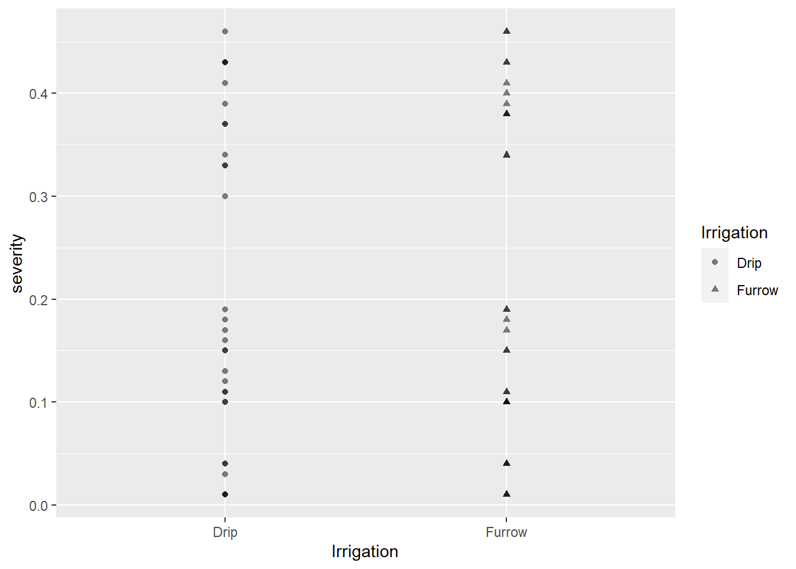
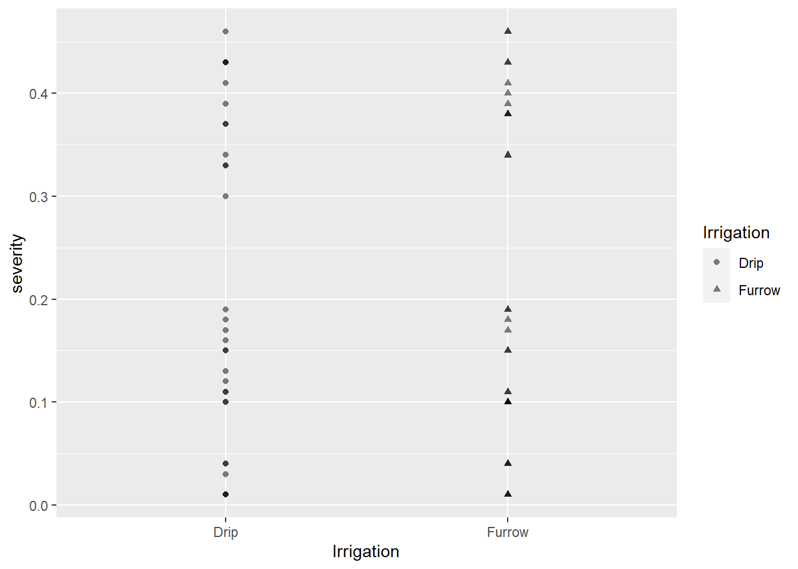
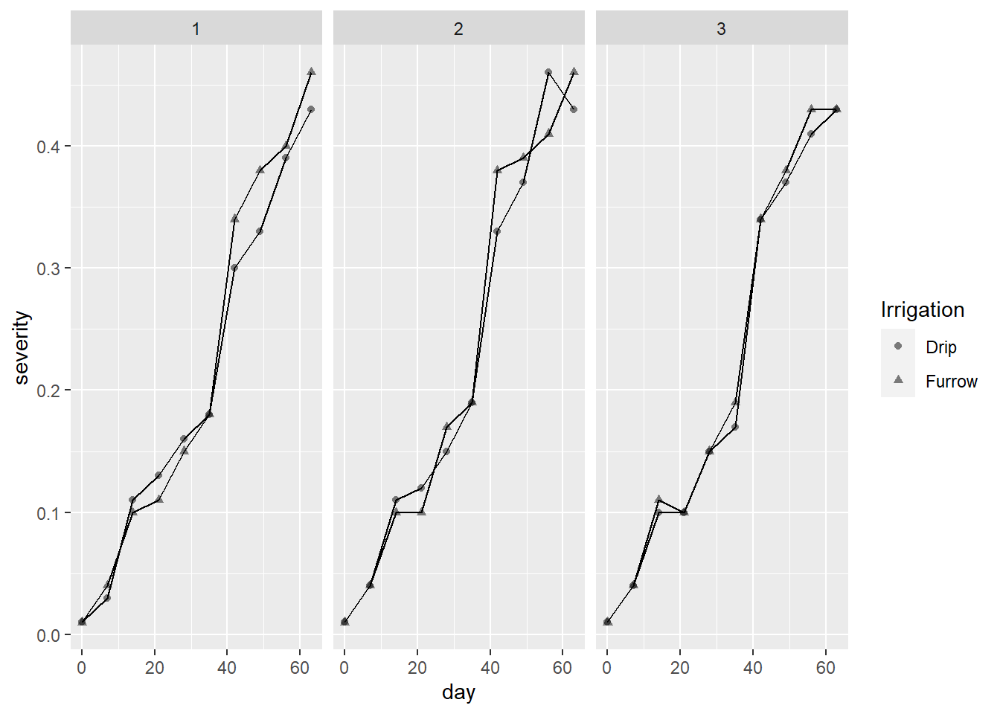
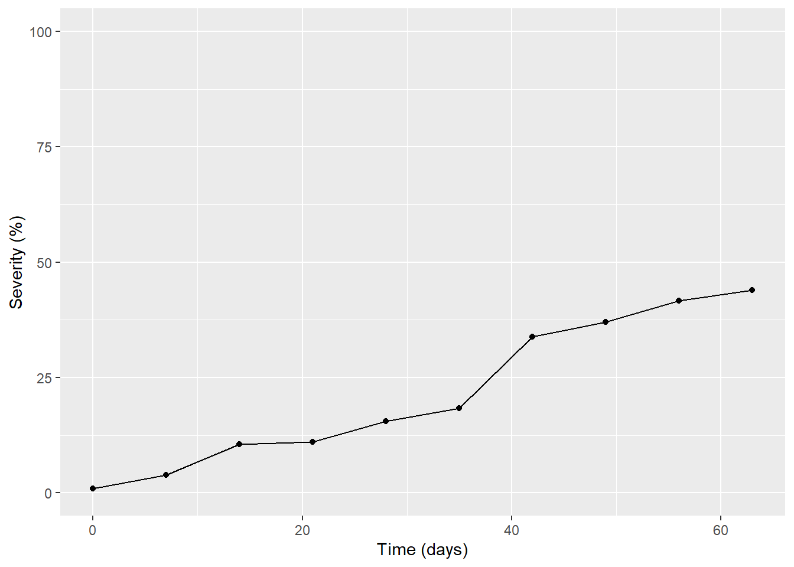
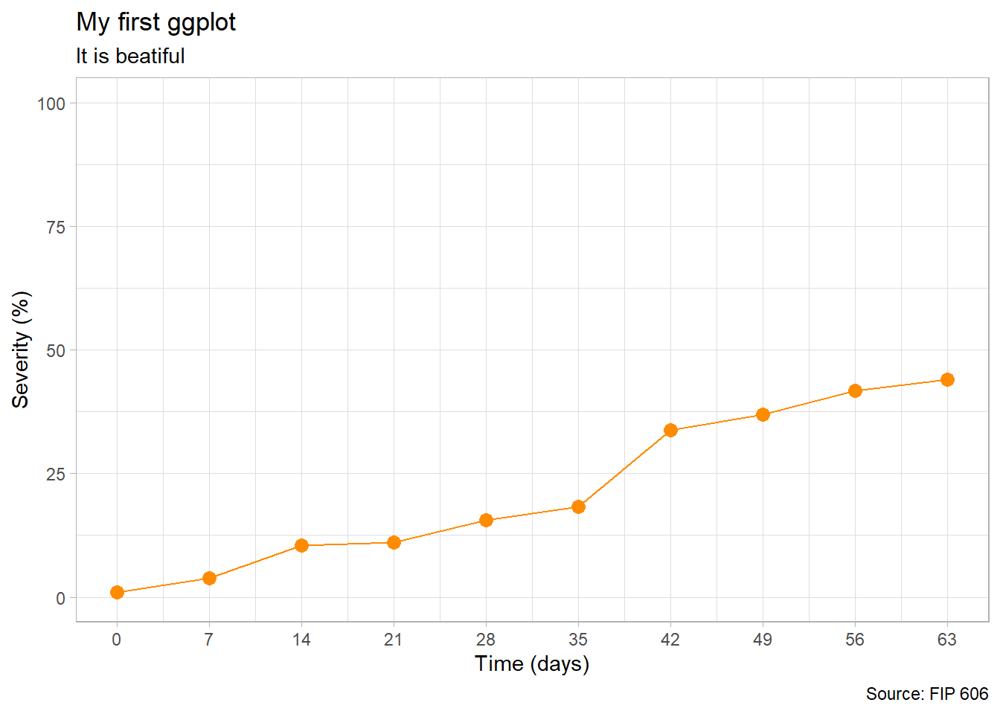

library(tidyverse)
mg <- read_csv("dados-diversos.csv")
mg |>
ggplot(aes(Irrigation, severity, shape = Irrigation))+
geom_point(alpha = 0.5)

Aula 4
Todos os gráficos ggplot2 começam com uma chamada para ggplot(), fornecendo dados padrão e mapeamentos estéticos, especificados por aes(). Em seguida, você adiciona camadas, escalas, coordenadas e facetas com +. Para salvar um gráfico em disco, use ggsave().
ggplot()Criar um novo ggplot
aes()Construir mapeamentos estéticos
`+`(<gg>) |>Adicionar componentes a um gráfico
ggsave()Salve um ggplot (ou outro objeto de grade) com padrões sensatos
qplot() quickplot()plotagem rápida
Para mais informações sobre o pacote ggplo2, clique aqui.
library(tidyverse)
mg <- read_csv("dados-diversos.csv")
mg |>
ggplot(aes(Irrigation, severity, shape = Irrigation))+
geom_point(alpha = 0.5)
mg |>
# filter(rep == 3) |>
ggplot(aes(day, severity, shape = Irrigation))+
geom_point(alpha = 0.5)+
geom_line()+
facet_wrap(~rep)
mg2 <- mg |>
select(day, rep, severity) |>
group_by(day) |>
summarize(sev = mean(severity))
mg2 |>
ggplot(aes(day, sev*100))+
geom_point()+
geom_line()+
ylim(0,100)+
labs(x = "Time (days)", y = "Severity (%)")
# Configurar o gráficomg2 |>
ggplot(aes(day, sev*100))+
geom_line(color = "darkorange")+
geom_point(size = 3,
color = "darkorange")+
scale_x_continuous(breaks = c(0,7,14,21,28,35,42,49,56,63))+
scale_y_continuous(n.breaks = 5,
limits = c(0,100))+
labs(x = "Time (days)",
y = "Severity (%)",
title = "My first ggplot",
subtitle = "It is beatiful",
caption = "Source: FIP 606")+
# Configurar o gráfico
theme_light()
ggsave("figs/myfirstggplot.png",
bg = "white",
width = 4,
height = 3)p <- mg2 |>
ggplot(aes(day, sev*100))+
geom_line(color = "darkorange")+
geom_point(size = 3,
color = "darkorange")+
scale_x_continuous(breaks = c(0,7,14,21,28,35,42,49,56,63))+
scale_y_continuous(n.breaks = 5,
limits = c(0,100))+
labs(x = "Time (days)",
y = "Severity (%)",
title = "My first ggplot",
subtitle = "It is beatiful",
caption = "Source: FIP 606")+
# Configurar o gráfico
theme_light()
ggsave("figs/myfirstggplot.png",
bg = "white",
width = 4,
height = 3)
p
library(plotly)
ggplotly(p)#plotly sem usar ggplot
plot_ly(mg2, x = ~day, y = ~sev, type = 'scatter', mode = 'dots')